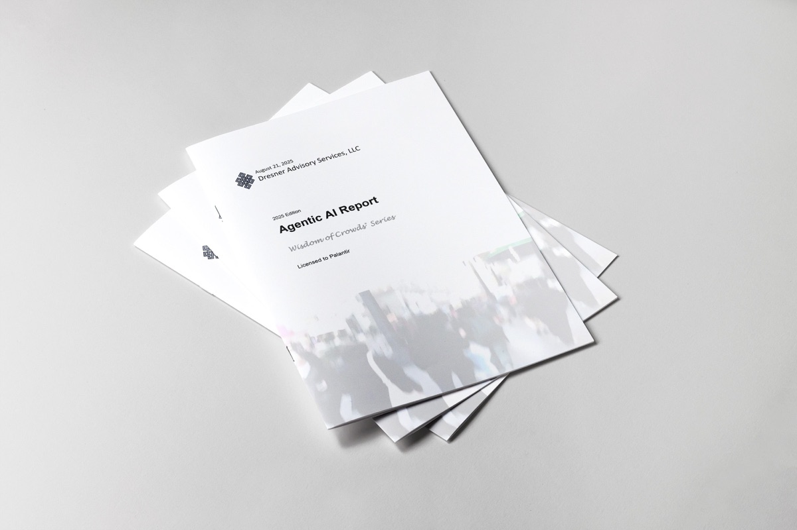

Palantir 荣登智能体 AI 供应商榜首
Dresner Advisory Services 发布的《2025 年人群智慧：智能体 AI 市场研究》显示，Palantir 处于领先地位。

Palantir 在智能体 AI 领域排名第一
在评级最高的供应商中，Palantir 在超大规模云服务商与云生态系统类别中获得了最高分。
关于报告
作为行业研究的客观信息来源，用户通过 Dresner Advisory Services 的智能体 AI 市场研究，了解同行如何利用并投资智能体 AI 技术。
《2025 年 Dresner Advisory Services 智能体 AI 报告》为商业智能技术与服务的消费者及生产者提供了丰富的信息与分析。该报告清晰洞察了应用模式、成功因素，以及与智能体 AI 项目初期收益相关的组织特征。

不到一年时间，智能体 AI 已从概念转化为业务优先事项。到 2025 年初，各供应商陆续发布解决方案，应用步伐正在加快：在我们调研的组织中，有 10.5% 正在积极试验或部署，另有 27% 蓄势待发。尽管仍有 58% 持谨慎态度，但发展势头正在积聚。随着早期采用者展现出成果，我们预计多数组织将随之广泛跟进。”
Get your copy of the 2025 Agentic AI Market Study
Please see our Privacy Policy regarding how we will handle this information.